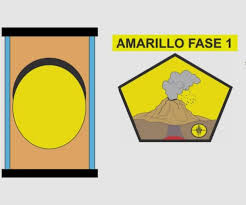

Medidas Preventivas en caso de caida de ceniza y en caso de erupcion
MEDIDAS PREVENTIVAS EN CASO DE CAIDA DE CENIZA
No humedecer la ceniza a fin de evitar taponamientos en el sistema de alcantarillado
Mantén la calma.
Utiliza medios electrónicos y de comunicación para obtener información confiable que den las autoridades de Protección Civil sobre la caída de ceniza y atiende siempre sus instrucciones
No realices actividades al aire libre y si es posible no salgas.
Cierra puertas y ventanas y coloca toallas o trapos húmedos en las rendijas.
Si es posible no conduzcas, si tienes que hacerlo, hazlo a baja velocidad y con las luces encendidas, ya que la ceniza dificulta la visibilidad y provoca que el pavimento se vuelva resbaloso.
Durante la caída de ceniza volcánica, evita que los menores realicen actividades al aire libre.
IMAGEN
Esta es una imagen:
sobre las medidas de preventivas de la ceniza
MEDIDAS PREVENTIVAS EN CASO DE ERUPCION
MEDIDAS PREVENTIVAS ANTES DE QUE EL VOLCAN HAGA ERUPCION
Infórmate si tu vivienda, sitio donde trabajas o estudias está en zona de peligro en caso de erupción
Discute con tu familia, amigos y vecinos sobre lo que podrían hacer frente a los diferentes peligros volcánicos, es decir armar un plan de contingencia.
Participa en simulacros programados por autoridades para poner a prueba tu plan de contingencia
Si tienes cualquier duda sobre los peligros volcánicos, pide ayuda a los expertos del Instituto Geofísico.

CUANDO UN VOLCAN VA A HACER ERUPCION
Revisa tu plan de contingencia
No creer rumores o información proporcionada por gente no autorizada
Preparar un kit de emergencia: radio portátil, linterna con pilas, botiquín, agua embotellada, alimentos que puedan consumirse sin cocinar, abrelatas/cuchillo, copias de tus documentos, lista de teléfonos importantes
Trata de mantenerte cerca de tu familia.
Preocuparte por tu buen estado y seguridad, ya que solo entonces podrás brindar ayuda efectiva a los demás.
INFORMACION ACERCA DE LAS FASES DEL VOLCAN POPOCATEPETL
Esta es alguna informacion sobre las fases:
FASE COLOR VERDE:
El volcán se encuentra en un estado no-eruptivo;
o, después de un cambio desde un nivel más alto:
se considera que la actividad volcánica ha cesado y el volcán ha vuelto a su estado normal, no-eruptivo.
FASE COLOR AMARILLO
El volcán experimenta un aumento significativo de la actividad volcánica;
o, después de un cambio desde un nivel más alto:
la actividad volcánica ha disminuido considerablemente, pero se recomienda precaucción

FASE COLOR NARANJA:
El volcán muestra un aumento en la actividad volcánica con probabilidades de erupción
o, después de un cambio desde un nivel más alto:
erupción en proceso con apenas emisión de cenizas (especificar la altura de la columna de cenizas si fuera posible)
FASE COLOR ROJO
Se preve que la erupción será inminente con probabilidades de emisión significativa de cenizas a la atmósfera o,erupción en proceso con emisión significativa de cenizas (especificar la altura de la columna de cenizas si fuera posible)
APLICACION 3
VOLCAN POPOCATEPETL
TMM
Medidas Preventivas en caso de caida de ceniza y en caso de erupcion
MEDIDAS PREVENTIVAS EN CASO DE CAIDA DE CENIZA
Cubrir nariz y boca con un pañuelo húmedo o cubre boca
Limpiar ojos y garganta con agua pura
Utilizar lentes de armazón y evita los lentes de contacto para reducir la irritación ocular
Cerrar ventanas o cubrirlas y permanecer lo más posible dentro de la casa.
Limpiar la ceniza acumulada en edificios, suministros de agua y aire, canales, bajadas de las aguas, techos, azoteas, patios y calles. Depositarlas en bolsas y evitar que se vaya al drenaje.
Reducir el uso del automóvil ya que conducir sobre ceniza es peligroso para usted y su auto.
Cubrir los depósitos de agua y alimentos que consume el ganado.
IMAGEN
Esta es una imagen:
sobre las medidas de preventivas de la ceniza
MEDIDAS PREVENTIVAS EN CASO DE ERUPCION
MEDIDAS PREVENTIVAS DURANTE UNA ERUPCION VOLCANICA
Ante todo conserva la calma; el pánico puede producir más víctimas que el fenómeno natural. Reúne rápidamente a tu familia, especialmente a los niños y ancianos, quienes son las personas más vulnerables en estos momentos. Lo más importante es tu vida, toma únicamente tus objetos personales.
Cierra las llaves de agua y gas, desconecta la luz y asegúrate de cerrar bien puertas y ventanas, y cumplir con los planes de emergencia acordados. Mantén la radio encendida para recibir la información que transmitan las autoridades correspondientes.
Si estás fuera de casa no intentes ingresar a la zona de riesgo, desplázate hacia lugares alejados del volcán; aléjate de valles y ríos por donde puedan bajar flujos de ceniza y rocas calientes, lava, lodo y emanaciones de gases. Procura no estar cerca de terrenos que hayan sufrido derrumbes. Si la ceniza volcánica comienza a caer, pon en práctica las siguientes recomendaciones:
Busca refugio bajo techo y permanezca allí hasta que el fenómeno haya pasado
Respira a través de una tela humedecida en agua o vinagre, esto evitará el paso de los gases y el polvo volcánico
Protege tus ojos cerrándolos tanto como sea posible y cúbrete con un sombrero y ropas gruesas
- En caso de una fuerte lluvia de ceniza no utilices el vehículo. La única protección contra la lluvia de ceniza y material volcánico de tamaño considerable son los refugios y techos reforzados
Debido a que las explosiones del volcán pueden causar ondas de aire o de choque que pueden romper los vidrios de las ventanas, coloca cintas adhesivas en forma de X, o en último caso, pon tablas que impidan la caída violenta de los mismos.
Si fuiste evacuado y te encuentras en un albergue, mantén la calma; allí recibirás alimentos, atención médica, información y podrás participar en las labores de mantenimiento del mismo

DESPUÉS DE UNA ERUPCION VOLCANICA
Permanece en el sitio seguro hasta que las autoridades informen que ha vuelto la normalidad. ¡No trates de regresar antes a tu hogar! Mantén en sintonía tu radio para recibir instrucciones. Antes de entrar a su casa, revisa que no se ha quedado debilitada por la erupción.
Evita hacer uso de líneas telefónicas, caminos, transportes, servicios médicos y hospitalarios si no es estrictamente necesario. Retira la acumulación de material volcánico caído sobre los techos para evitar que éstos se derrumben. Este riesgo crece si se presentan lluvias porque el agua aumenta el peso de los materiales sobre los techos (un metro cúbico de ceniza húmeda puede llegar a pesar más de una tonelada).
No comas ni bebas alimentos que puedan estar contaminados.
IMAGENES
Esta son algunas de las imagenes de la caida de ceniza y erupcion volcanica:
APLICACION 3
VOLCAN POPOCATEPETL
TMM